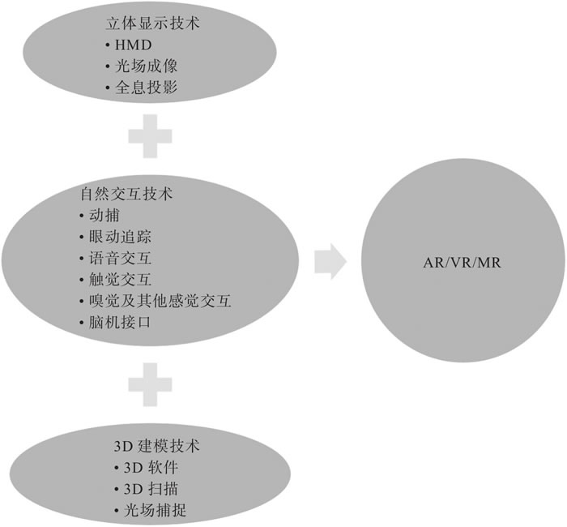
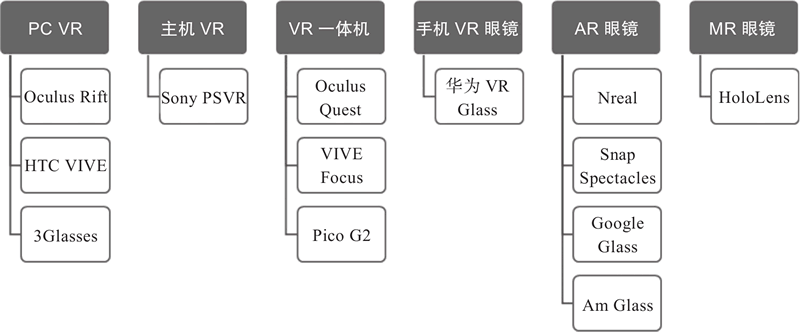
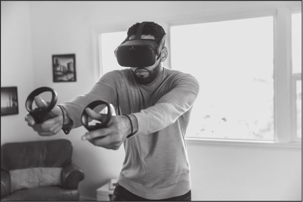
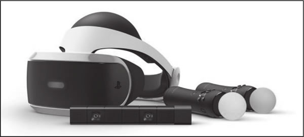
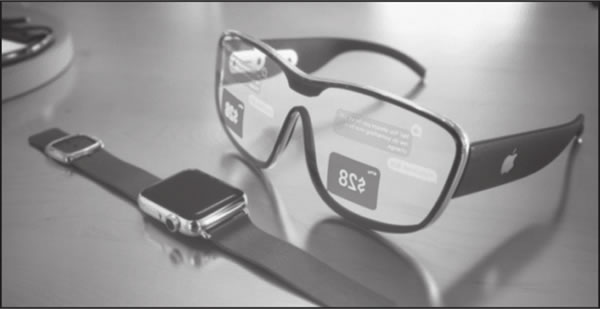
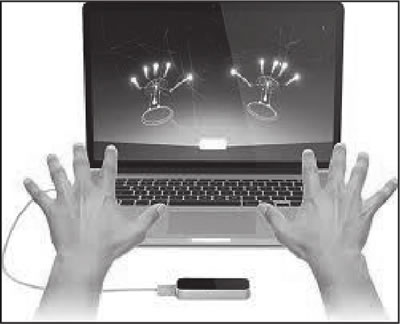
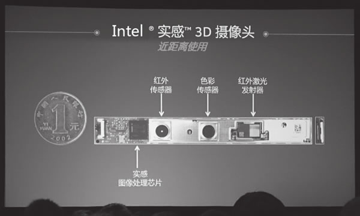
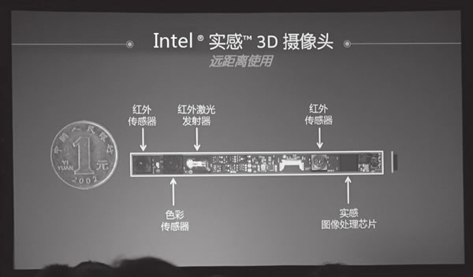

首页 > 编程笔记
虚拟现实技术介绍（10分钟入门）
我们通常所说的“虚拟现实”一词其实包含了多个技术分支，如 AR/VR/MR 等。
AR 是 Augmented Reality 的缩写，通常被称为增强现实。AR 的定义很广泛，技术种类众多。目前主流的 AR 是指通过设备识别和判断（二维、三维、GPS、体感、面部等识别物）将虚拟信息叠加在以识别物为基准的某个位置，并显示在设备屏幕上，从而实时交互虚拟信息。
VR 是 Virtual Reality 的缩写，通常被称为沉浸式虚拟现实。VR 为用户提供了完全沉浸式的体验，使用户有一种置身于真实世界的感觉，是一种高级的、理想化的虚拟现实系统。
除了我们通常了解的 AR 和 VR 这两个名词之外，行业内其实还有 MR 和 XR 的说法：
2014 年，Facebook 对 Oculus 的收购盘活了整个行业。2019 年，Facebook 推出的 Oculus Quest 让无数人眼前一亮，可谓“当前 VR 一体机产品中的翘楚”。2020 年 9 月，Facebook 发布 Oculus Quest2，并宣布在 2021 年全面停产 Oculus Rift PCVR 系列产品。
2015 年，微软发布第一代 HoloLens 全息眼镜，在单一机身中融合了 CPU、GPU 和全息处理器，并在 2019 年推出更为强大的 HoloLens 2。
在 2017 年的 WWDC 上，苹果推出了专门为打造增强现实体验而开发的框架 ARKit，以及面向 AI 的 CoreML。同年，Google 推出了和苹果 ARKit 功能相似的 ARCore。
2019 年 9 月，华为在旗舰手机 Mate 30 Pro 的发布会上重磅推出了自家的VR眼镜产品，为业界所看好。
可以预见，未来的虚拟现实产品将不再区分 AR/VR/MR，而是一种融合性的产品。与此同时，虚拟现实的实时扫描、环境感知和渲染技术将需要借助人工智能技术，特别是计算机视觉和深度学习的帮助。
虚拟现实技术自诞生以来应用于多个领域—从军事到航空航天，从教育到娱乐游戏，从医疗到旅游，等等。从目前来看，融合了 5G/AI 等技术的 AR/VR 设备有望取代智能手机的计算模块。
本节将向大家简单介绍以上 3 种技术的相关知识。
主流的沉浸式虚拟现实头戴设备，包括 Oculus Rift、Oculus Quest、HTC Vive、Sony Playstation VR、3Glasses、Pico VR 等，大多基于双显示屏技术。
那么，微软的黑科技产品 HoloLens 又是基于什么原理呢？
先来看看 HoloLens，它相当于 Google Glass 的升级版，可以看作是 Google Glass 和 Kinect 的合体产品。它内置了独立的计算单元，通过处理从摄像头所捕捉的各种信息，借助自创的 HPU（全息处理芯片），透过层叠的彩色镜片创建虚拟物体影像，再借助类似 Kinect 的体感技术，让用户从一定角度和虚拟物体进行交互。
依靠 HPU 和层叠的彩色镜片，HoloLens 可以让用户感觉到这些全息图像直接投射到了现实场景中的物体上。当用户移动时，HoloLens 借助广泛应用于机器人和无人驾驶汽车领域的 SLAM（同步定位与建图）技术来获取环境信息，并计算出玩家的位置，保证虚拟画面的稳定。
和传统立体显示技术利用双眼视差的原理不同，全息投影技术可以通过将光线投射在空气或者特殊的介质（如玻璃、全息膜）上呈现 3D 影像。人们可以从任何角度观看影像，得到与现实世界中完全相同的视觉效果。
目前，我们看到的各类表演中所使用的全息投影技术都需要用到全息膜或玻璃等特殊的介质，需要提前在舞台上做各种精密的光学布置。这类表演的效果绚丽无比，但成本高昂、操作复杂，需要操作人员进行专业训练。
简单来说，就是用光纤向视网膜直接投射整个数字光场（Digital Lightfield），产生所谓的“电影级现实”（Cinematic Reality）。
目前来说，3D 建模主要通过 3D 软件、3D 扫描和光场捕捉等方式来实现。
除了游戏之外，3D 软件建模还广泛应用在影视、动画、建筑和工业产品的设计中。目前在游戏、影视和动画领域，最常用的 3D 设计软件包括 3Ds Max、Maya、zBrush、Cinema4D、Blender、Softimage 等，而在建筑和工业产品设计中，最常用的是 AutoCAD、Rhino 等。
单纯使用 3D 软件建模的问题在于，一方面高度依赖建模师个人的技能熟练度，另一方面对于现实世界的很多场景、物体和人物无法做到精准还原，很容易进入“恐怖谷”的瓶颈之中。
3D 扫描仪是利用 3D 扫描技术将真实世界的物体或环境快速建立数字模型的工具。3D 扫描仪有多种类型，通常可以分为两大类：接触式 3D 扫描仪和非接触式 3D 扫描仪。
近几年，还有一种方案被 Facebook Reality Labs、微软 MR 工作室、上海叠境、深圳普罗米修斯和微美全息等公司采用，即使用上百个相机的多相机阵列和深度相机组成内环抓拍系统，并对对象进行全方位拍摄，通过高速处理的 AI 算法和动态融合的系统实时合成对象的立体模型。
需要注意的是，使用 3D 扫描和光场捕捉建模技术所获取的 3D 模型与动作动画仍然需要使用主流的 3D 设计软件进行后期处理。使用 3D 扫描或光场捕捉技术可以大大提高 3D 建模效率，减少前期工作量，并实现更为真实的效果。
实现手势识别、表情、动捕的主流技术分为两大类，一类是光学动捕，一类是非光学动捕。光学动捕技术包括主动光学动捕和被动光学动捕，而非光学动捕技术包括惯性动捕、机械动捕、电磁动捕和超声波动捕。
目前，我们主要使用光谱成像和红外光谱成像两种图像处理方法，前一种需要捕捉虹膜和巩膜之间的轮廓，后一种则需要跟踪瞳孔的轮廓。
一个完整的语音交互系统包括对语音的识别和对语义的理解两大部分，不过人们通常用“语音识别”一词来概括。语音识别包含了特征提取、模式匹配和模型训练三方面的技术，涉及的领域包括信号处理、模式识别、声学、听觉心理学、人工智能等。
触觉交互技术可实现在虚拟世界中创造和控制虚拟的物体，比如远程操控机械或机器人，甚至模拟训练外科实习生进行手术。
目前，已经有一些研究机构和创业团队在着手解决这些问题。
脑机接口是人或者动物的大脑和外部设备建立直接连接的通道，分为单向脑机接口与双向脑机接口：
Neuralink 公司属于侵入式技术的代表，其产品通过在大脑中植入微型电极和芯片，收集人脑 1500 个点产生的神经元信号。Neuralink 公司使用了一种被称为“神经织网”的技术，该技术通过一种特制的“缝纫机”将只有头发丝 1/10 粗细的线植入大脑，这种线可以像人的神经一样高速传输各种数据。虽然植入式技术的难度更大，但在信息的捕捉和传递方面更加精准、可靠，发展空间不可限量。按照马斯克的想法，脑机接口设备的短期目标是治疗一些常见的脑部疾病，终极目标则是让人类和人工智能技术融合，实现人机交互。
图 2 展示了当前市场上的主流虚拟现实头戴设备：
Oculus 系列 VR 设备主要包含两种型号 Oculus Rift S 及 Oculus Quest，分别面向不同的人群。
Oculus Rift S 产品由以下几个部分组成：
需要特别说明的是，在 2020 年 9 月的 Oculus Connect 开发者大会上，Facebook 官方正式宣布放弃纯 PC 端的 VR 产品线，集中精力打造 Oculus Quest 这种 VR 一体机设备。在 2021 年，Oculus Rift S 产品线全面停产。
在 2020 年 9 月的 Oculus Connect 开发者大会上，Facebook 发布了全新的 Oculus Quest 2。
从某种程度上讲，我们可以把 Oculus Quest 看作是一个增强版的安卓智能设备。它内置了独立的计算单元、6GB RAM 内存以及 64GB 或 256GB 的存储空间，并配备了专门的无线控制器。
Oculus Quest 2 配备了一块单眼分辨率为 1832×1920 的 OLED 屏幕，刷新率为 90Hz，仅重 503克。得益于清晰度的提升以及视场角的增大，Oculus Quest 2 的纱门效应问题有所缓解。Oculus Quest 2 还内置了立体扬声器和麦克风，这样用户无须再单独购置耳机。Oculus Quest 的续航时间为 2.5 小时。
Oculus Quest 2 和 Oculus Rift S 一样内置了 Oculus Insight 追踪功能，使用内置的传感器捕捉用户的肢体动作，追踪范围覆盖整个场景。
Oculus Quest 2 也支持 Oculus Touch，可以摆脱电脑独立使用，方便随身携带。
Oculus Quest 2 内置了独立的计算单元（高通骁龙 XR2，也就是定制版的高通 865 处理器），性能相比上一代大大提升。
此外，通过 Oculus Link 服务，Oculus Quest 2 可以很好地实现 PC 端的虚拟场景体验。
VIVE/VIVE Pro 产品主要由 3 部分组成。
图 4 VIVE 用户可以在一定空间自由运动
VIVE 和 VIVE Pro 产品都需要连接电脑使用（使用线缆或无线升级套件）。
VIVE Cosmos 的其他技术参数与 VIVE Pro 类似，同样需要连接电脑使用。与 VIVE Pro 最大的不同是，它内置了 Inside-out 追踪技术，无须使用 Lighthouse 定位器就可以实现大空间的捕捉和定位。
VIVE Focus 无须连接电脑使用，所以被称为 VR 一体机。它内置了高通骁龙 835 处理器，支持最高 2TB 的外部存储，单眼分辨率为 1440×1600，刷新率为 75Hz，视场角为 110°。
和 HTC VIVE 系列的其他产品类似，VIVE Focus 提供了两个独立的操控手柄，内置触控板、菜单按钮、VIVE 按钮、扳机和手柄按钮。
从技术参数上来看，PSVR 相比 Oculus Rift 和 HTC Vive 略有不同。其分辨率是 1080p，支持 3D 音效，拥有 9 块 LED 屏幕，使用 PlayStation 相机捕捉玩家的位置。
图 5 显示了 PSVR 和 PS Move 控制器。
2020 年 6 月，Sony 发布了新一代主机产品PS5，并透露了下一代 PSVR2 的相关信息。
虽然使用 Unity 也能进行 PSVR 产品的开发，但是 Sony 对第三方开发者的审核一向严格，需要申请成为官方注册的开发者或者申请加入“中国之星”计划。
国内的知名 VR 设备包括小鸟看看推出的 Pico VR 一体机、3Glasses 推出的全系列 VR 设备。另外，华为、小米等企业近两年也都陆续推出了自家的 VR 头显设备。
HoloLens 有很多感应器，可以实现5大功能：环境数据采集、实时三维重构、三维场景识别、物理建模、仿真和实时 CG 图像渲染。
通过 HoloLens 这套顶尖的光学投影系统，用户可以看到高分辨率、多维度的彩色图像，并且延时很低。这些光学设备是透明的，不会影响用户正常观察现实世界，更好地结合了虚拟与现实。目前来说，HoloLens 最大的问题是视场角较小，有比较大的空间没有被覆盖到。
HoloLens 小小的主板上承载着所有的计算部件，包括 Intel SoC 和定制的显示单元。除此之外，它还需要识别手势和语音指令。
2019 年的 MWC 大会上，微软正式发布了第二代混合现实设备 HoloLens 2。它内置全新的显示系统，可以在低功耗下显著地实现性能提升。此外，HoloLens 2 还更新了用户与全息影像的交互方式，利用新的 TOF 深度传感器以及内置的语义理解模块来实现更加自然的手势交互，如图 6 所示。
图 6 HoloLens 2的使用场景
比起其他可视化构建工具，如网页、动画、图形编辑工具来说，Quest3D 能实现在实时编辑环境中与操作者互动。
VR-Platform 中所有的操作都以美工可以理解的方式进行，不需要程序员参与。如果操作者有良好的 3D Max 建模和渲染基础，只要对 VR-Platform 平台稍加学习就可以很快制作出自己想要的虚拟现实场景。
在 2020 年 6 月的 PS5 发布会上，Sony 展示了使用虚幻引擎 UE5 开发的游戏示例版本，通过革命性的技术 Nanite、Lumen 和 Niagara 让开发者制作出场面更加宏大、视觉效果更为逼真的游戏场景。
图 8 展示了如何使用 Leap Motion 实现手部动作识别。
目前，市面上可能只有 Leap Motion 可以做到如此低成本且精准的光学手部探测。它非常适合要求手部动作精准的应用场景，劣势是相比Kinect之类的全身探测而言，应用范围相对狭窄。
Leap Motion 提供了一套名为 ORIEN 的 SDK，可以配合 Oculus Rift 和 HTC VIVE 进行开发。
Intel Realsense 开发套件包含 Intel 实感摄像头、相关的固件更新、SDK，并提供对 Unity 的开发支持。
Intel 实感摄像头分为两种，分别是用于近距离拍摄的精度较高的前置 3D 摄像头和用于较远距离拍摄的精度稍低的后置 3D 摄像头。
前置 3D 摄像头的原理和 Kinect 类似，都是基于结构光实现的，如图 9 所示。
后置 3D 摄像头则使用主动立体成像原理，模仿人眼的视差原理，计算出 3D 图像中的深度信息，如图 10 所示。
目前，Intel Realsense 支持面向 Windows 操作系统和 Android 系统的应用的开发。感兴趣的读者可以到 Intel Realsense官网了解更详细的信息。
除了 Vuforia 之外，还有其他一些优秀的跨平台 AR SDK，比如 Wikitude、Kudan、EasyAR、HiAR 等。
ARKit 是苹果在 WWDC 2017 上推出的针对 iOS 11 平台的 AR SDK，它让苹果一夜之间成为全球最大的 AR 设备厂商。
ARCore 则是 Google 在 2017 年推出的面向 Android 平台的 AR SDK。
图 11 VR/AR应用开发的基本流程
随着时间的推移，市场中逐渐出现新的设备和平台，我们需要根据实际的需要进行选择。
主流的 VR 设备都自带对应的交互设备，比如 Oculus Rift 对应的交互设备是 Oculus Touch，HTC VIVE 对应的交互设备是 VIVE Controller，PSVR 对应的交互设备是 PS Move。
有些情况下，VR 设备自带的交互方式还不够自然，我们可能会选择第三方交互工具，比如 Leap Motion、Intel Realsense、Project Tango 等。
Oculus Rift 也有自己专属的 Oculus Store，其功能类似于 VIVE Port。
Steam 平台作为主流的游戏发布平台之一，也支持 HTC VIVE 和 Oculus Rift 游戏应用的上传和发布。
PSVR 依托 PSN 平台，早已渗透到数千万的 PS 游戏主机用户中。
在开发 VR/AR 应用时，开发者需要注意以下几点。
但这种UI界面对 VR 基本不适用，因为我们的眼睛无法聚焦在如此近的物体上，因此在 VR 项目中，我们需要更多考虑使用剧情型的 UI。具体的形式可能是墙上的闹钟、电视、计算机屏幕、移动手机，或是未来枪械的全息展示。
我们最好把 UI 元素放在一个舒适的可读距离，并进行相应的缩放。
很多开发者想要把 UI 元素关联到摄像机。当玩家移动的时候，UI 元素会保持在一个固定的位置。这样做对小的 UI 元素可能会比较合适，不过对于比较大的 UI 元素，就好比把一张报纸放到你的脸上，很容易让用户感到不舒服，甚至是眩晕。
此外，我们也可以使用3D环绕音效来实现类似的效果。
一个基本的原则是避免移动摄像机，除非需要使用它来复制玩家的运动，否则就会导致所谓的前庭觉问题发生。如果我们在游戏中需要玩家运动，需保证向玩家提供一个静态的参考物，比如飞船的驾驶座舱、汽车的内部座椅等。
对于较大距离的运动，我们可以考虑使用 Teleport（传送）的方式。
总之，当用户在虚拟环境中运动的时候，不要破坏身体各个感官的平衡。
相比非 VR 项目来说，VR 项目的性能消耗是很高的。其主要原因是所有的画面都必须为每只眼睛单独渲染一次。我们在开发VR应用的过程中需要时刻想到这些问题，如果能在开发之前就想到这些问题，那么后期会节省大量的时间。
对于移动式 VR 来说，优化工作就显得尤为重要，这不仅仅是因为要运行 VR 应用，还因为移动设备的运算性能和散热性能相比电脑来说差距较大。
考虑到实现目标帧速的重要性，我们需要在所有可能涉及帧速的地方优化项目代码。关于优化代码，读者可以参考 Unity 官方提供的指南。
AR 是 Augmented Reality 的缩写，通常被称为增强现实。AR 的定义很广泛，技术种类众多。目前主流的 AR 是指通过设备识别和判断（二维、三维、GPS、体感、面部等识别物）将虚拟信息叠加在以识别物为基准的某个位置，并显示在设备屏幕上，从而实时交互虚拟信息。
VR 是 Virtual Reality 的缩写，通常被称为沉浸式虚拟现实。VR 为用户提供了完全沉浸式的体验，使用户有一种置身于真实世界的感觉，是一种高级的、理想化的虚拟现实系统。
除了我们通常了解的 AR 和 VR 这两个名词之外，行业内其实还有 MR 和 XR 的说法：
- MR 是 Mixed Reality 的缩写，即混合现实，指的是合并现实和虚拟世界而产生的新的可视化环境。在新的可视化环境里，物理和数字对象共存，并实时互动。
- XR 是 Extended Reality 的缩写，即扩展现实。实际上，XR 是 AR/VR/MR 等各种形式的虚拟现实技术的总称。它分为多个层次，包括从通过有限传感器输入的虚拟世界到完全沉浸式的虚拟世界。
2014 年，Facebook 对 Oculus 的收购盘活了整个行业。2019 年，Facebook 推出的 Oculus Quest 让无数人眼前一亮，可谓“当前 VR 一体机产品中的翘楚”。2020 年 9 月，Facebook 发布 Oculus Quest2，并宣布在 2021 年全面停产 Oculus Rift PCVR 系列产品。
2015 年，微软发布第一代 HoloLens 全息眼镜，在单一机身中融合了 CPU、GPU 和全息处理器，并在 2019 年推出更为强大的 HoloLens 2。
在 2017 年的 WWDC 上，苹果推出了专门为打造增强现实体验而开发的框架 ARKit，以及面向 AI 的 CoreML。同年，Google 推出了和苹果 ARKit 功能相似的 ARCore。
2019 年 9 月，华为在旗舰手机 Mate 30 Pro 的发布会上重磅推出了自家的VR眼镜产品，为业界所看好。
可以预见，未来的虚拟现实产品将不再区分 AR/VR/MR，而是一种融合性的产品。与此同时，虚拟现实的实时扫描、环境感知和渲染技术将需要借助人工智能技术，特别是计算机视觉和深度学习的帮助。
虚拟现实技术自诞生以来应用于多个领域—从军事到航空航天，从教育到娱乐游戏，从医疗到旅游，等等。从目前来看，融合了 5G/AI 等技术的 AR/VR 设备有望取代智能手机的计算模块。
虚拟现实的技术基础
虚拟现实是一种综合性技术，由三大类技术组成，分别是立体显示技术、3D 建模技术和自然交互技术，如下图所示：

图 1 虚拟现实的三大技术基础
图 1 虚拟现实的三大技术基础
本节将向大家简单介绍以上 3 种技术的相关知识。
1、立体显示技术
立体显示技术以人眼的立体视觉原理为依据。因此，研究人眼的立体视觉机制、掌握立体视觉的规律，对设计立体显示系统是十分必要的。如果想在虚拟世界看到立体的效果，就需要知道人眼立体视觉产生的原理，然后再用一定的技术通过显示设备还原立体效果。1) HMD技术
HMD（头戴显示）技术的基本原理是让影像透过棱镜反射之后，进入人的双眼在视网膜上成像，营造出在超短距离内看超大屏幕的效果，而且具备足够高的解析度。头戴显示器通常拥有两个显示器，而两个显示器由计算机分别驱动向两只眼睛提供不同的图像，再通过人的大脑将两个图像融合以获得深度感知，从而产生立体的图像。主流的沉浸式虚拟现实头戴设备，包括 Oculus Rift、Oculus Quest、HTC Vive、Sony Playstation VR、3Glasses、Pico VR 等，大多基于双显示屏技术。
那么，微软的黑科技产品 HoloLens 又是基于什么原理呢？
先来看看 HoloLens，它相当于 Google Glass 的升级版，可以看作是 Google Glass 和 Kinect 的合体产品。它内置了独立的计算单元，通过处理从摄像头所捕捉的各种信息，借助自创的 HPU（全息处理芯片），透过层叠的彩色镜片创建虚拟物体影像，再借助类似 Kinect 的体感技术，让用户从一定角度和虚拟物体进行交互。
依靠 HPU 和层叠的彩色镜片，HoloLens 可以让用户感觉到这些全息图像直接投射到了现实场景中的物体上。当用户移动时，HoloLens 借助广泛应用于机器人和无人驾驶汽车领域的 SLAM（同步定位与建图）技术来获取环境信息，并计算出玩家的位置，保证虚拟画面的稳定。
2) 全息投影技术
全息投影技术可以分为投射全息投影和反射全息投影两种，是全息摄影技术的逆向展示。和传统立体显示技术利用双眼视差的原理不同，全息投影技术可以通过将光线投射在空气或者特殊的介质（如玻璃、全息膜）上呈现 3D 影像。人们可以从任何角度观看影像，得到与现实世界中完全相同的视觉效果。
目前，我们看到的各类表演中所使用的全息投影技术都需要用到全息膜或玻璃等特殊的介质，需要提前在舞台上做各种精密的光学布置。这类表演的效果绚丽无比，但成本高昂、操作复杂，需要操作人员进行专业训练。
3) 光场成像技术
神秘的 Magic Leap 采用了所谓的“光场成像”技术。从某种意义上来说，该技术可以算作“准全息投影”技术。其原理是用螺旋状振动的光纤形成图像，并直接让光线从光纤弹射到人的视网膜上。简单来说，就是用光纤向视网膜直接投射整个数字光场（Digital Lightfield），产生所谓的“电影级现实”（Cinematic Reality）。
2、3D建模技术
为了打造完美的虚拟现实体验，我们需要从零开始构建虚拟世界，或将现实生活中的场景转化成虚拟世界的一部分。那么，这种虚拟世界如何构建呢？目前来说，3D 建模主要通过 3D 软件、3D 扫描和光场捕捉等方式来实现。
1) 3D软件建模
简单来说，3D 软件建模就是通过各种三维设计软件在虚拟的三维空间构建出具有三维数据的模型。这个模型又被称作 3D 模型，可以通过 3D 渲染技术以二维的平面图像呈现出来，或是通过计算机模拟，或是通过 3D 打印设备构建。除了游戏之外，3D 软件建模还广泛应用在影视、动画、建筑和工业产品的设计中。目前在游戏、影视和动画领域，最常用的 3D 设计软件包括 3Ds Max、Maya、zBrush、Cinema4D、Blender、Softimage 等，而在建筑和工业产品设计中，最常用的是 AutoCAD、Rhino 等。
单纯使用 3D 软件建模的问题在于，一方面高度依赖建模师个人的技能熟练度，另一方面对于现实世界的很多场景、物体和人物无法做到精准还原，很容易进入“恐怖谷”的瓶颈之中。
2) 3D扫描建模
在构建虚拟现实世界时，除了使用常规的 3D 建模技术和实景拍摄技术之外，我们还可以使用 3D 扫描技术将真实环境、人物和物体进行快速建模，将实物的立体信息转化成计算机可以直接处理的数字模型。3D 扫描仪是利用 3D 扫描技术将真实世界的物体或环境快速建立数字模型的工具。3D 扫描仪有多种类型，通常可以分为两大类：接触式 3D 扫描仪和非接触式 3D 扫描仪。
3) 光场捕捉建模
光场捕捉建模技术最早应用于 Ren Ng 创办的 Lytro，它通过在单个传感器前放置微透镜阵列实现多个视角下画面的采集，但这种方案会导致分辨率大大降低。近几年，还有一种方案被 Facebook Reality Labs、微软 MR 工作室、上海叠境、深圳普罗米修斯和微美全息等公司采用，即使用上百个相机的多相机阵列和深度相机组成内环抓拍系统，并对对象进行全方位拍摄，通过高速处理的 AI 算法和动态融合的系统实时合成对象的立体模型。
需要注意的是，使用 3D 扫描和光场捕捉建模技术所获取的 3D 模型与动作动画仍然需要使用主流的 3D 设计软件进行后期处理。使用 3D 扫描或光场捕捉技术可以大大提高 3D 建模效率，减少前期工作量，并实现更为真实的效果。
3、自然交互技术
随着 VR/AR 时代的来临，传统的交互方式已经远远不能满足人们的需求。因此，模仿人类本能的自然交互技术成为虚拟现实技术的重要基础。虚拟现实要实现完美的沉浸感，需要用到哪些自然交互技术呢？1) 动捕
为了实现和虚拟现实世界中场景和人物的自然交互，我们需要捕捉人体的基本动作，包括手势、表情和身体运动等。实现手势识别、表情、动捕的主流技术分为两大类，一类是光学动捕，一类是非光学动捕。光学动捕技术包括主动光学动捕和被动光学动捕，而非光学动捕技术包括惯性动捕、机械动捕、电磁动捕和超声波动捕。
2) 眼动追踪
眼动追踪的原理其实很简单，就是使用摄像头捕捉人眼或脸部的图像，然后用算法实现人脸和人眼的检测、定位与跟踪，从而估算用户的视线变化。目前，我们主要使用光谱成像和红外光谱成像两种图像处理方法，前一种需要捕捉虹膜和巩膜之间的轮廓，后一种则需要跟踪瞳孔的轮廓。
3) 语音交互
在和现实世界交互的时候，除了眼神、表情和动作交互外，还有语音交互。一个完整的语音交互系统包括对语音的识别和对语义的理解两大部分，不过人们通常用“语音识别”一词来概括。语音识别包含了特征提取、模式匹配和模型训练三方面的技术，涉及的领域包括信号处理、模式识别、声学、听觉心理学、人工智能等。
4) 触觉交互
触觉交互技术又被称作所谓的“力反馈”技术，在游戏行业和虚拟训练中一直有相关的应用。具体来说，它会通过向用户施加某种力、震动等，让用户产生更加真实的沉浸感。触觉交互技术可实现在虚拟世界中创造和控制虚拟的物体，比如远程操控机械或机器人，甚至模拟训练外科实习生进行手术。
5) 嗅觉及其他感觉交互技术
在虚拟现实的研究中，对视觉和听觉交互的研究一直占据主流地位，对其他感觉交互技术的研究则相对被忽视。目前，已经有一些研究机构和创业团队在着手解决这些问题。
6) 脑机接口
脑机接口（Brain Computer Interface，BCI）就是大脑和计算机直接进行交互，有时候又被称为意识-机器交互、神经直连。脑机接口是人或者动物的大脑和外部设备建立直接连接的通道，分为单向脑机接口与双向脑机接口：
- 单向脑机接口只允许单向的信息通信，比如只允许计算机接收大脑传来的命令，或者只允许计算机向大脑发送信号（比如重建影像）。
- 双向脑机接口则允许大脑和外部计算机设备实现双向的信息交换，比如 Neurosky（神念科技）的 Brainlink。它可以采集大脑产生的生物电信号，并通过 esense 算法获取使用者的精神状态参数（专注度、放松度）等，实现基于脑电波的人机交互，或是俗称的“意念控制”。
Neuralink 公司属于侵入式技术的代表，其产品通过在大脑中植入微型电极和芯片，收集人脑 1500 个点产生的神经元信号。Neuralink 公司使用了一种被称为“神经织网”的技术，该技术通过一种特制的“缝纫机”将只有头发丝 1/10 粗细的线植入大脑，这种线可以像人的神经一样高速传输各种数据。虽然植入式技术的难度更大，但在信息的捕捉和传递方面更加精准、可靠，发展空间不可限量。按照马斯克的想法，脑机接口设备的短期目标是治疗一些常见的脑部疾病，终极目标则是让人类和人工智能技术融合，实现人机交互。
主流的虚拟现实设备
在了解了虚拟现实的相关基础技术后，我们接下来简单认识一下当前市场上主流的几款虚拟现实头戴设备，为以后的实战开发做好准备。图 2 展示了当前市场上的主流虚拟现实头戴设备：

图 2 市场上的主流虚拟现实头戴设备
图 2 市场上的主流虚拟现实头戴设备
1、Oculus系列
2012 年，Oculus 成立于美国加利福尼亚州，并于 2012 年 9 月通过 Kickstarter 众筹平台发售初代产品 DK1。2014 年 3 月，Facebook 以 20 亿美元收购了 Oculus。Oculus 系列 VR 设备主要包含两种型号 Oculus Rift S 及 Oculus Quest，分别面向不同的人群。
1) Oculus Rift S
2016 年 3 月，Oculus 推出第一代面向消费者的正式产品 Oculus Rift CV1。2019 年 3 月，Oculus 发布了升级版的 Oculus Rift S，需要连接电脑使用。Oculus Rift S 产品由以下几个部分组成：
- 头戴显示模块：Oculus Rift S 将上一代的 OLED 屏幕替换为 LCD 屏幕，单眼分辨率达到 1440×1280，同时保持高达 80Hz 的刷新率，相比上一代的 90Hz 略有下降。
- 透视镜：对用户来说，他们希望得到一个填满整个视野的图像，且不失真。一般情况下，这需要又重又贵的镜头组，但是 Oculus Rift S 使用了一对放大镜，开发人员扭曲游戏画面使用户通过镜片看到一个正常的画面。新一代镜片不仅能清晰显示画面，还能缓解纱门效应问题。
- 位置跟踪模块：相比上一代产品，Oculus Rift S 增加了 Oculus Insight 模块。无论玩家在空间的哪个角落，该模块都可以在无须借助外部感应器的条件下捕捉玩家的动作，并投射到VR中。
- 交互输入设备：早期的 Oculus Rift S 仅支持使用游戏手柄和传统的键盘、鼠标进行人机交互，这显然不能满足 VR 所追求的沉浸感需求。2016 年年底，Oculus 正式发布了 Oculus Touch，这是一款专用于 VR 互动的输入设备。Oculus Touch 采用了类似手环的设计，可以对玩家的手部进行跟踪，而传感器也可以追踪手指运动，同时为用户的抓握带来便利。
需要特别说明的是，在 2020 年 9 月的 Oculus Connect 开发者大会上，Facebook 官方正式宣布放弃纯 PC 端的 VR 产品线，集中精力打造 Oculus Quest 这种 VR 一体机设备。在 2021 年，Oculus Rift S 产品线全面停产。
2) Oculus Quest
Oculus Quest 是 Oculus 2019 年 5 月重点推出的一款新品。与需要搭配电脑使用的 Oculus Rift S 不同，Oculus Quest 属于独立的一体机，如图 3 所示。

图 3 Oculus Quest的使用场景
图 3 Oculus Quest的使用场景
在 2020 年 9 月的 Oculus Connect 开发者大会上，Facebook 发布了全新的 Oculus Quest 2。
从某种程度上讲，我们可以把 Oculus Quest 看作是一个增强版的安卓智能设备。它内置了独立的计算单元、6GB RAM 内存以及 64GB 或 256GB 的存储空间，并配备了专门的无线控制器。
Oculus Quest 2 配备了一块单眼分辨率为 1832×1920 的 OLED 屏幕，刷新率为 90Hz，仅重 503克。得益于清晰度的提升以及视场角的增大，Oculus Quest 2 的纱门效应问题有所缓解。Oculus Quest 2 还内置了立体扬声器和麦克风，这样用户无须再单独购置耳机。Oculus Quest 的续航时间为 2.5 小时。
Oculus Quest 2 和 Oculus Rift S 一样内置了 Oculus Insight 追踪功能，使用内置的传感器捕捉用户的肢体动作，追踪范围覆盖整个场景。
Oculus Quest 2 也支持 Oculus Touch，可以摆脱电脑独立使用，方便随身携带。
Oculus Quest 2 内置了独立的计算单元（高通骁龙 XR2，也就是定制版的高通 865 处理器），性能相比上一代大大提升。
此外，通过 Oculus Link 服务，Oculus Quest 2 可以很好地实现 PC 端的虚拟场景体验。
2、HTC VIVE系列
VIVE 最早是 HTC 与 Valve 合作推出的虚拟现实产品，于 2016 年 4 月 1 日开始向消费者发售。和 Oculus 系列产品类似，HTC VIVE 系列产品同样分为需要连接电脑使用的 VR 头戴设备和无须连接电脑使用的独立 VR 一体机。1) VIVE和VIVE Pro
VIVE 是该系列的初代产品，VIVE Pro 则是该系列的专业升级版。因为两者的区别主要是性能上的提升，所以可以归为一个类。VIVE/VIVE Pro 产品主要由 3 部分组成。
- 头戴显示设备：VIVE 支持的单眼分辨率为 1080×1200，VIVE Pro 支持的单眼分辨率为 1440×1600，刷新率同为 90Hz，视场角为 110°。VIVE 中内置了支持 Steam VR 追踪技术的传感器、G-sensor 校正、陀螺仪传感器。而 VIVE Pro 还多了一个瞳距传感器。
- 两个支持大空间（Room-scale）追踪的 Lighthouse 定位器：Lighthouse 定位器由 VIVE 头盔上配备的陀螺仪传感器、加速度计和激光定位传感器以及外壳上二三十个定位传感器组成，可以通过固定在天花板上的 Steam VR 基站跟踪佩戴者在特定区域内所处的位置。Steam VR 基站跟踪的范围可以根据佩戴者所处区域的大小进行调节。VIVE 和 VIVE Pro 支持最大 3.5×3.5 米的追踪区域，更专业的企业版产品支持最大 7×7 米的追踪区域。
- 两个操控手柄：VIVE 还提供了两个独立的操控手柄，内置多功能触摸面板、抓握键、双阶段扳机、系统键、菜单键等。此外，HTC 还推出了 VIVE 无线升级套件，从而让玩家摆脱电缆的束缚，在大空间自由活动，如图 4 所示。
图 4 VIVE 用户可以在一定空间自由运动
VIVE 和 VIVE Pro 产品都需要连接电脑使用（使用线缆或无线升级套件）。
2) VIVE Cosmos
VIVE Cosmos 是 HTC 于 2019 年推出的全新系列 PC VR 头显设备，支持单眼 1440× 1700 的超高分辨率，刷新率、视场角和此前的产品没有区别，分别是 90Hz 和 110°。VIVE Cosmos 的其他技术参数与 VIVE Pro 类似，同样需要连接电脑使用。与 VIVE Pro 最大的不同是，它内置了 Inside-out 追踪技术，无须使用 Lighthouse 定位器就可以实现大空间的捕捉和定位。
3) VIVE Focus/VIVE Focus Plus
VIVE Focus 是 HTC 于 2018 年推出的一款 VR 一体机设备，对标的竞争产品是 Oculus Quest。VIVE Focus 无须连接电脑使用，所以被称为 VR 一体机。它内置了高通骁龙 835 处理器，支持最高 2TB 的外部存储，单眼分辨率为 1440×1600，刷新率为 75Hz，视场角为 110°。
和 HTC VIVE 系列的其他产品类似，VIVE Focus 提供了两个独立的操控手柄，内置触控板、菜单按钮、VIVE 按钮、扳机和手柄按钮。
3、Sony PlayStation VR
Sony PlayStation VR（简称 PSVR）是 Sony 公司在 VR 领域推出的一款跨时代产品。与 Oculus Rift 及 HTC Vive 不同，PSVR 是基于 PlayStation4 游戏机的 VR 设备。从技术参数上来看，PSVR 相比 Oculus Rift 和 HTC Vive 略有不同。其分辨率是 1080p，支持 3D 音效，拥有 9 块 LED 屏幕，使用 PlayStation 相机捕捉玩家的位置。
图 5 显示了 PSVR 和 PS Move 控制器。

图 5 PSVR和PS Move控制器
图 5 PSVR和PS Move控制器
2020 年 6 月，Sony 发布了新一代主机产品PS5，并透露了下一代 PSVR2 的相关信息。
虽然使用 Unity 也能进行 PSVR 产品的开发，但是 Sony 对第三方开发者的审核一向严格，需要申请成为官方注册的开发者或者申请加入“中国之星”计划。
4、其他VR设备
除了 HTC Vive、Oculus 和 PSVR 之外，众多国外厂商也推出了自己的 VR 设备，如 Valve Index、HP Reverb G2，这些设备基本上可以分为需要连接电脑使用的 PC VR 设备和无须连接电脑使用的VR一体机。国内的知名 VR 设备包括小鸟看看推出的 Pico VR 一体机、3Glasses 推出的全系列 VR 设备。另外，华为、小米等企业近两年也都陆续推出了自家的 VR 头显设备。
5、Microsoft HoloLens
目前，HoloLens 是市面上唯一一款量产的消费级 MR 产品，一经亮相就惊艳全球科技界。HoloLens 的所有计算单元都集成在一个小小的头戴设备中，包括 Intel 的 SoC（System-on-a-Chip）和自行设计的专用图像处理部件。HoloLens 有很多感应器，可以实现5大功能：环境数据采集、实时三维重构、三维场景识别、物理建模、仿真和实时 CG 图像渲染。
通过 HoloLens 这套顶尖的光学投影系统，用户可以看到高分辨率、多维度的彩色图像，并且延时很低。这些光学设备是透明的，不会影响用户正常观察现实世界，更好地结合了虚拟与现实。目前来说，HoloLens 最大的问题是视场角较小，有比较大的空间没有被覆盖到。
HoloLens 小小的主板上承载着所有的计算部件，包括 Intel SoC 和定制的显示单元。除此之外，它还需要识别手势和语音指令。
2019 年的 MWC 大会上，微软正式发布了第二代混合现实设备 HoloLens 2。它内置全新的显示系统，可以在低功耗下显著地实现性能提升。此外，HoloLens 2 还更新了用户与全息影像的交互方式，利用新的 TOF 深度传感器以及内置的语义理解模块来实现更加自然的手势交互，如图 6 所示。
图 6 HoloLens 2的使用场景
6、AR眼镜设备
国内外知名的 AR 眼镜设备包括 Google 的 Google Glass、Snapchat 的 Snap Spectacles、爱普生的 AR 眼镜、耐德佳的 AR 眼镜、Nreal、太平洋未来的 Am Glass、深圳增强现实的 Oglass 眼镜和亮风台科技的 Hi AR 眼镜等。
目前，这些 AR 眼镜少部分用于广告、娱乐等领域，共同的缺点是视场角较小，续航能力较差，还有待进一步升级迭代。除了以上已经面市的 AR 眼镜，目前市场最为期待的还是苹果传闻中的 iGlass 眼镜，如图 7 所示。

图 7 苹果iGlass眼镜概念设计图
图 7 苹果iGlass眼镜概念设计图
主流的虚拟现实开发工具
在了解了虚拟现实的基本概念、主要技术以及主流的虚拟现实设备后，接下来我们认识一下主流的虚拟现实开发工具，从而为进入 VR/AR 实战开发做好准备。1、虚拟现实开发平台简介
虽然虚拟现实最近几年才开始火爆，但实际上这项技术已经有几十年的发展历史。在此期间，很多优秀的开发平台和引擎不断涌现。但随着时间的推移，许多优秀平台逐渐消失，因此这里只提及目前仍然被人们使用的开发平台。1) Quest3D
Quest3D 是由 Act-3D 公司开发的实时 3D 构建工具。比起其他可视化构建工具，如网页、动画、图形编辑工具来说，Quest3D 能实现在实时编辑环境中与操作者互动。
2) VR-Platform
VR-Platform（Virtual Reality Platform，VRP）即虚拟现实仿真平台，是一款由中视典数字科技有限公司独立开发的、具有完全自主知识产权的、直接面向三维美工的一款虚拟现实软件。该软件适用性强、操作简单、功能强大、高度可视化。VR-Platform 中所有的操作都以美工可以理解的方式进行，不需要程序员参与。如果操作者有良好的 3D Max 建模和渲染基础，只要对 VR-Platform 平台稍加学习就可以很快制作出自己想要的虚拟现实场景。
3) Unity3D
Unity3D 具有简单易上手、丰富的游戏资源素材和对多款 VR/AR/MR 设备友好支持的特性，这使其在无数优秀虚拟现实开发平台中成为当之无愧的首选工具。4) Unreal Engine
Unreal Engine（以下简称 UE）是由 Epic Games 开发的一款商用游戏引擎。它通过虚幻引擎，使开发出的游戏画面表现力惊人。它的所有开发源代码均在 GitHub 上开放。虽然虚幻引擎上手相对较难，但出色的画质表现仍然让它成为很多虚拟现实游戏和应用开发者喜爱的工具。在 2020 年 6 月的 PS5 发布会上，Sony 展示了使用虚幻引擎 UE5 开发的游戏示例版本，通过革命性的技术 Nanite、Lumen 和 Niagara 让开发者制作出场面更加宏大、视觉效果更为逼真的游戏场景。
2、第三方工具和SDK
1) Leap Motion
Leap Motion 的控制器中有两个单色红外线摄像机和三个红外线 LED。它能检测 1 米以内弧形范围的对象。其中，LED 灯主要负责生成红外线，摄像机则以每秒 300 帧的画面抓捕返回来的光线，然后把信号通过 USB 接口传给电脑进行分析，最后比较两个摄像机生成的 2D 画面的距离差，从而生成即时的手部 3D 动作信号。图 8 展示了如何使用 Leap Motion 实现手部动作识别。

图 8 Leap Motion手部动作识别
图 8 Leap Motion手部动作识别
目前，市面上可能只有 Leap Motion 可以做到如此低成本且精准的光学手部探测。它非常适合要求手部动作精准的应用场景，劣势是相比Kinect之类的全身探测而言，应用范围相对狭窄。
Leap Motion 提供了一套名为 ORIEN 的 SDK，可以配合 Oculus Rift 和 HTC VIVE 进行开发。
2) Intel Realsense
Intel Realsense 是 Intel 推出的所谓“实感”技术，可以将手部/手指运动跟踪、面部表情识别与分析、3D 扫描、语音识别、增强现实、背景分段等功能集成到我们所开发的 VR/AR 应用中。Intel Realsense 开发套件包含 Intel 实感摄像头、相关的固件更新、SDK，并提供对 Unity 的开发支持。
Intel 实感摄像头分为两种，分别是用于近距离拍摄的精度较高的前置 3D 摄像头和用于较远距离拍摄的精度稍低的后置 3D 摄像头。
前置 3D 摄像头的原理和 Kinect 类似，都是基于结构光实现的，如图 9 所示。

图 9 用于近距离拍摄的实感前置3D摄像头
图 9 用于近距离拍摄的实感前置3D摄像头
后置 3D 摄像头则使用主动立体成像原理，模仿人眼的视差原理，计算出 3D 图像中的深度信息，如图 10 所示。

图 10 用于远距离拍摄的实感后置3D摄像头
图 10 用于远距离拍摄的实感后置3D摄像头
目前，Intel Realsense 支持面向 Windows 操作系统和 Android 系统的应用的开发。感兴趣的读者可以到 Intel Realsense官网了解更详细的信息。
3) 常见的AR SDK
Vuforia 是如今最为流行的跨平台 AR SDK 之一，服务于超过 25 万人的注册开发者，形成了全球最大规模的 AR 生态系统。Vuforia SDK 支持 iOS 和 Android 的原生开发，也支持 Unity 开发。除了 Vuforia 之外，还有其他一些优秀的跨平台 AR SDK，比如 Wikitude、Kudan、EasyAR、HiAR 等。
ARKit 是苹果在 WWDC 2017 上推出的针对 iOS 11 平台的 AR SDK，它让苹果一夜之间成为全球最大的 AR 设备厂商。
ARCore 则是 Google 在 2017 年推出的面向 Android 平台的 AR SDK。
虚拟现实应用开发的基本流程和注意事项
虚拟现实应用与传统的 3D 应用有着很大的不同，其中最主要的不同就是视觉呈现和交互方式。VR 应用往往希望呈现一种身临其境的感觉，AR/MR 应用则希望将虚拟和现实融为一体。无论是哪一类型的应用，其视觉呈现和交互方式相比传统的 3D 应用都有着显著的区别。1、基本流程
在学习 VR/AR 应用开发之前，我们先了解一下开发的基本流程，如图 11 所示。图 11 VR/AR应用开发的基本流程
1) 选择合适的设备和平台
在开发任何一款 VR/AR 应用之前，我们都需要根据产品的实际应用场景选择合适的设备和平台：- 如果要开发电脑上的 VR 游戏，HTC VIVE 和 Oculus Rift 是首选。
- 如果要开发支持 PS4 游戏主机的VR游戏，PSVR 是目前唯一的选择。
- 如果要开发混合现实应用，Microsoft HoloLens 是目前唯一的选择。
- 如果要开发 AR 应用，就需要用手机配合类似 Vuforia、EasyAR、ARKit 和 ARCore 的 AR SDK 进行开发，或是使用特定的AR眼镜设备配合相关的SDK进行开发。
随着时间的推移，市场中逐渐出现新的设备和平台，我们需要根据实际的需要进行选择。
2) 选择恰当的交互方式和第三方工具
对于 VR/AR 应用的开发而言，传统的键盘、鼠标和游戏手柄通常不是很好的交互选择。主流的 VR 设备都自带对应的交互设备，比如 Oculus Rift 对应的交互设备是 Oculus Touch，HTC VIVE 对应的交互设备是 VIVE Controller，PSVR 对应的交互设备是 PS Move。
有些情况下，VR 设备自带的交互方式还不够自然，我们可能会选择第三方交互工具，比如 Leap Motion、Intel Realsense、Project Tango 等。
3) 选择合适的开发引擎
对于 VR/AR 应用开发来说，目前主流的开发引擎包括 Unity 和 UE4。在之前的内容中我们曾经提出，如果是开发对画面真实感要求很高的 3A 级别游戏或是地产展示项目，可能 UE4 引擎更加适合。而对于常规的 VR/AR 应用，为了追求高开发效率、短开发周期、低成本或是对更多平台的支持，Unity 往往是最佳的选择。4) 选择合适的插件
Unity 提供了丰富的第三方插件，我们需要根据项目需要选择合适的第三方插件和工具。5) 选择合适的产品发布平台
与手机平台类似，为了向大众普及，业内提供了特定的发布平台和渠道。比如 HTC VIVE 推出了自己专属的 VivePort，类似于苹果的 App Store，提供截图展示、视频展示、购买、下载、评价等功能，可以让玩家和开发者进行无缝沟通和连接。Oculus Rift 也有自己专属的 Oculus Store，其功能类似于 VIVE Port。
Steam 平台作为主流的游戏发布平台之一，也支持 HTC VIVE 和 Oculus Rift 游戏应用的上传和发布。
PSVR 依托 PSN 平台，早已渗透到数千万的 PS 游戏主机用户中。
2、注意事项
在开发 VR/AR 应用时，一个共同的注意事项就是在设计产品时应充分考虑各种设备的特点。在开发 VR/AR 应用时，开发者需要注意以下几点。
1) 注意 UI 分辨率和画质
目前，VR 设备的分辨率普遍在 4K 水平以内，因此对任何在宽度或高度上要占据几个像素的物体，都会出现比较明显的像素化现象。一个简单的原则是尽量使用粗体字，并且尽量不要使用在 VR 场景中容易变得像素化的细纹。2)考虑使用剧情型的UI
在传统的非 VR 项目中，UI 元素通常显示在界面的顶部，包括生命值、得分之类的信息。用户界面与游戏世界没有关联，但是对玩游戏的玩家有一定的影响。这就是所谓的“非剧情型UI”。但这种UI界面对 VR 基本不适用，因为我们的眼睛无法聚焦在如此近的物体上，因此在 VR 项目中，我们需要更多考虑使用剧情型的 UI。具体的形式可能是墙上的闹钟、电视、计算机屏幕、移动手机，或是未来枪械的全息展示。
3)考虑UI元素的放置位置
将 UI 元素放在哪个位置也需要认真考虑，太靠近用户会导致眼部疲劳，离得太远会感觉聚焦在地平线上（这种情况可能发生在室外环境）。此外，我们还需要对 UI 元素的比例进行适当调整，具体要根据产品的实际需求来确定。我们最好把 UI 元素放在一个舒适的可读距离，并进行相应的缩放。
很多开发者想要把 UI 元素关联到摄像机。当玩家移动的时候，UI 元素会保持在一个固定的位置。这样做对小的 UI 元素可能会比较合适，不过对于比较大的 UI 元素，就好比把一张报纸放到你的脸上，很容易让用户感到不舒服，甚至是眩晕。
4) 提醒用户关注某个特定的方向
虽然 VR 可以让用户 360° 探索，但是有时候我们需要提醒用户关注某个特定的方向。在某些场景中，我们可以考虑使用箭头来引起用户的注意。这些箭头会根据用户的朝向淡入或淡出。此外，我们也可以使用3D环绕音效来实现类似的效果。
5) 考虑舒适度
对于 VR 应用，最可怕的问题莫过于恶心眩晕，也就是所谓的“晕VR”。这个问题产生的根源是，在现实世界中玩家的身体可能处于静止状态，但是他们的视角却在虚拟环境中移动。一个基本的原则是避免移动摄像机，除非需要使用它来复制玩家的运动，否则就会导致所谓的前庭觉问题发生。如果我们在游戏中需要玩家运动，需保证向玩家提供一个静态的参考物，比如飞船的驾驶座舱、汽车的内部座椅等。
对于较大距离的运动，我们可以考虑使用 Teleport（传送）的方式。
总之，当用户在虚拟环境中运动的时候，不要破坏身体各个感官的平衡。
6) 使用淡入/淡出和闪烁渐变实现运动效果
在虚拟环境中实现运动的一个常用方法是使用淡入/淡出或闪烁渐变，比如快速淡出到黑色；将摄像机移动到期望的位置，然后再淡入。除此之外，我们还可以考虑更复杂的方法，也就是使用闪烁渐变。7) 对项目进行持续优化
对于 VR 应用来说，如果想要让用户获得好的体验，特别是免除恶心眩晕的困扰，优化是必不可少的。对 VR 应用的优化应该在项目启动的前期就开始，而且应该贯穿始终。此外，在目标设备上进行实际测试也是非常有必要的。相比非 VR 项目来说，VR 项目的性能消耗是很高的。其主要原因是所有的画面都必须为每只眼睛单独渲染一次。我们在开发VR应用的过程中需要时刻想到这些问题，如果能在开发之前就想到这些问题，那么后期会节省大量的时间。
对于移动式 VR 来说，优化工作就显得尤为重要，这不仅仅是因为要运行 VR 应用，还因为移动设备的运算性能和散热性能相比电脑来说差距较大。
考虑到实现目标帧速的重要性，我们需要在所有可能涉及帧速的地方优化项目代码。关于优化代码，读者可以参考 Unity 官方提供的指南。
关注公众号「站长严长生」，在手机上阅读所有教程，随时随地都能学习。内含一款搜索神器，免费下载全网书籍和视频。

微信扫码关注公众号